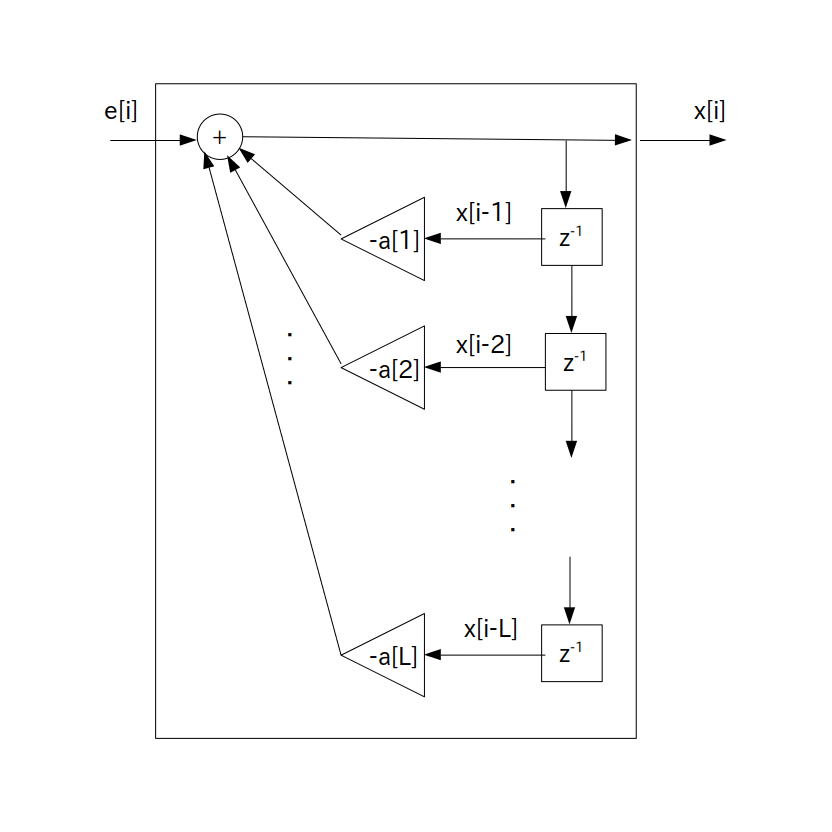

あるディジタル信号列 $x[i]$ が次の式に従って確率的に生成されているとき、この $x[i]$ は L 次 自己回帰モデル( Auto-Regressive model : AR モデル )に従って生成されていると言います。
この L 次自己回帰モデルは記号 AR(L) で表されます。
次数 $\textrm{L}$ を正の整数とした時
\begin{align*} x[i] & = -\sum_{n=1}^{\textrm{L}} \{ a[n] \cdot x[i-n] \} \} + e[i] \\ & = -a[1] \cdot x[i-1] -a[2] \cdot x[i-2] - \cdots -a[\textrm{L}] \cdot x[i-\textrm{L}] + e[i] \\ \end{align*}$a[n]$ ・・・ LPC 係数 (Linear Prediction Coefficient: 線形予測係数 )
$e[i]$ ・・・正規乱数などの任意のホワイトノイズ (平均 0、分散 $\sigma^2$)
※ 文献によっては LPC 係数の前にマイナスが付かない定義もあります
$x[i]$ は確率変数になるので、信号列を生成する毎に異なる信号列が出てくることに注意して下さい。
また次数 L と LPC 係数 $a[n]$ の値は本来は未知数なのですが、とりあえず今の所は既知であるとします。
なお LPC 係数の前にマイナスが付いている理由は歴史的な背景によるもの(？)なので特に気にしなくても結構です。
さてこの L 次自己回帰モデルは次のブロック図で表されます。

要するにホワイトノイズ $e[i]$ を入力すると確率変数 $x[i]$ が出力される標準形 L 次 IIR フィルタとなります。
ただし後段フィードフォワード部の IIRフィルタ係数は b[0] = 1 で残りは b[n] = 0 なので、プログラム表現は以下の通りに簡略化されます。
x[i] = 任意のホワイトノイズ for( int n = 1; n <= L; ++n ) x[i] += -a[n] * x[i-n]; // a[n]の符号注意
なお L 次自己回帰モデルを IIR フィルタとみなした際の伝達関数
\[ \textrm{H}(z) = \frac{1}{ 1 + a[1] \cdot z^{-1} + a[2] \cdot z^{-2} + \cdots + a[\textrm{L}] \cdot z^{-\textrm{L}} } \]の分母が 0 になる条件式、つまり
\[ z^{\textrm{L}} + a[1] \cdot z^{\textrm{L}-1} + a[2] \cdot z^{\textrm{L}-2} + \cdots + a[\textrm{L}] = 0 \]を特性多項式と呼び、$x[i]$が定常であるためにはこの IIR フィルタが安定であること、つまり特性多項式の全ての根が単位円の内側にある必要があります。
※ 定常でない状態をランダムウォークといいます
そしてもし $x[i]$ が定常ならば、平均は
\[ \textrm{E}(x[i]) = 0 \]となります。
一方、分散と共分散の計算は少しややこしくなります。
まず整数 $n$ を遅延時刻(ラグ)とおいた時に分散・共分散を $\gamma[n] = Cov \left ( x[i], x[i-n] \right )$、自己相関係数 を$\rho[n]$ とします。
すると $x[i]$が定常過程であることから
なので
\begin{align*} \rho[n] &= \frac{ Cov \left ( x[i], x[i-n] \right ) }{ \sqrt{ Cov \left ( x[i], x[i] \right ) } \sqrt{ Cov \left ( x[i-n], x[i-n] \right ) } } \\ &= \frac{\gamma[n]}{\gamma[0]} \end{align*}という関係が出てきます。
また自己相関係数 $\rho[n]$ の値は以下の Yule-Walker 方程式と呼ばれる方程式を解くことで求めることが出来ます($\rho[0]$ は 1 )。
※ $\rho[0] = 1$
\[ \begin{array}{rrrrrc} \rho[0]\cdot a[1] & +\rho[1]\cdot a[2] & +\rho[2]\cdot a[3] & +\cdots & +\rho[\textrm{L}-1]\cdot a[\textrm{L}] & =-\rho[1] \\ \rho[1]\cdot a[1] & +\rho[0]\cdot a[2] & +\rho[1]\cdot a[3] & +\cdots & +\rho[\textrm{L}-2]\cdot a[\textrm{L}] & =-\rho[2] \\ \rho[2]\cdot a[1] & +\rho[1]\cdot a[2] & +\rho[0]\cdot a[3] & +\cdots & +\rho[\textrm{L}-3]\cdot a[\textrm{L}] & =-\rho[3] \\ & & \vdots & & & \\ \rho[\textrm{L}-1]\cdot a[1] & +\rho[\textrm{L}-2]\cdot a[2] & +\rho[\textrm{L}-3]\cdot a[3] & +\cdots & +\rho[0]\cdot a[\textrm{L}] & =-\rho[\textrm{L}] \\ \end{array} \]では準備が終わったので、まずは分散 $\gamma[0]$ を求めてみましょう。
$\sigma^2$ をホワイトノイズの分散としたとき、$\gamma[0]$ は以下のように変形できます。
\begin{align*} \gamma[0] &= Cov \left ( x[i], x[i] \right ) \\ &= Cov \left ( -a[1] \cdot x[i-1] -a[2] \cdot x[i-2] - \cdots -a[\textrm{L}] \cdot x[i-\textrm{L}] + e[i] , x[i] \right ) \\ &= -a[1] \cdot \gamma[1] - a[2] \cdot \gamma[2] - \cdots - a[\textrm{L}] \cdot \gamma[\textrm{L}] + \sigma^2 \\ &= -a[1] \cdot \rho[1] \cdot \gamma[0] - a[2] \cdot \rho[2] \cdot \gamma[0] - \cdots - a[\textrm{L}] \cdot \rho[\textrm{L}] \cdot \gamma[0] + \sigma^2 \end{align*}よって
\[ \gamma[0] = Cov \left ( x[i], x[i] \right ) = \frac{\sigma^2}{1 +a[1] \cdot \rho[1] + a[2] \cdot \rho[2] + \cdots + a[\textrm{L}] \cdot \rho[\textrm{L}] } \]と分散が得られます。
ここまで来たら共分散 $\gamma[n]$ は漸化式
\begin{align*} \gamma[n] &= Cov \left ( x[i], x[i-n] \right ) \\ &= Cov \left ( -a[1] \cdot x[i-1] -a[2] \cdot x[i-2] - \cdots -a[\textrm{L}] \cdot x[i-\textrm{L}] + e[i] , x[i-n] \right ) \\ &= -a[1] \cdot \gamma[n-1] - a[2] \cdot \gamma[n-2] - \cdots - a[\textrm{L}] \cdot \gamma[n-\textrm{L}] \end{align*}を使って順次求められます。